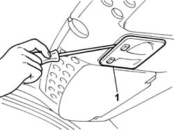
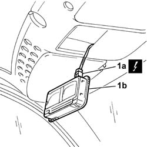

7040E50 front modular courtesy light unit - r+r
- Path
- Procedures > 70 FITTINGS > 7040 BODYSHELL INTERIOR TRIMS AND FITTINGS > 7040E interior courtesy light system > 7040E50 front modular courtesy light unit - r+r
- Kind
- repair procedure (removal / refitting; the operation number is the code)
- Applies to
- all engines; all production periods
- Interactive page
- https://sloeber94.github.io/elrnDB-fDbl/en/#/2585142
Applies to: all engines; all production periods
 Removing
Removing
 Refitting
RefittingDisconnect the battery negative terminal.
1. Remove the courtesy light unit using leverage on the switch side, as illustrated.

Applies to: all engines; all production periods
1. Disconnect the electrical connector (1a) and remove the courtesy light (1b).
 | Name | Connector |
|---|---|---|
1a | Front courtesy light |

Applies to: all engines; all production periods
Refitting
RemovingConnect the electrical connector and fit the courtesy light in its housing.
| Name | Connector |
|---|---|---|
- | Front courtesy light |
Connect the battery negative terminal.